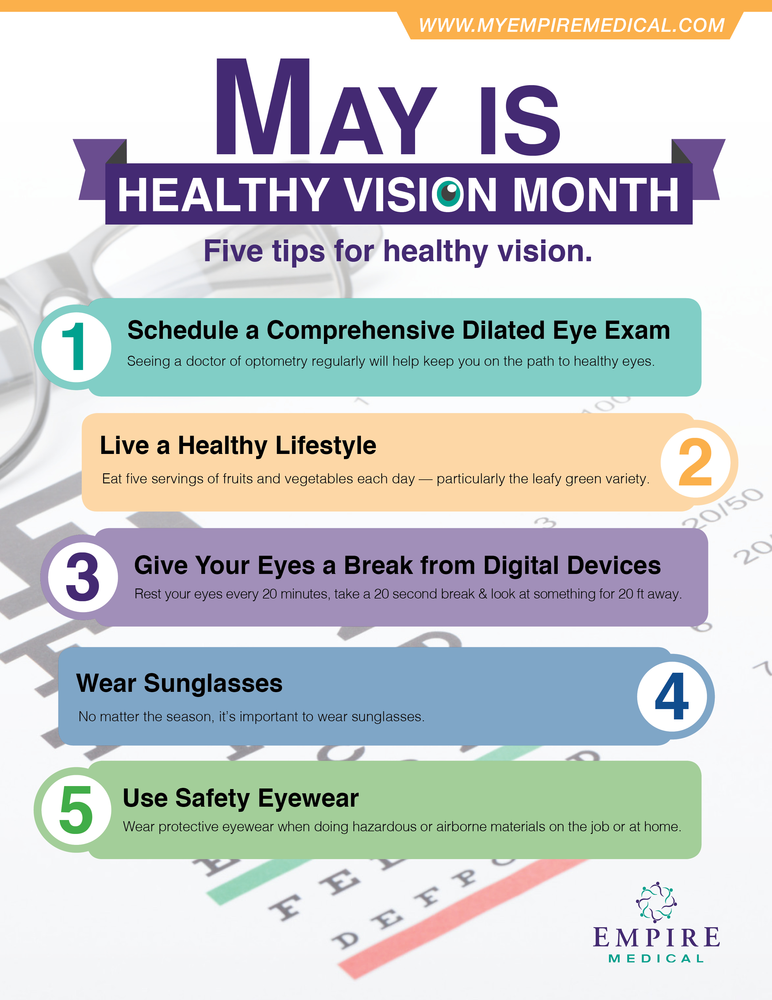
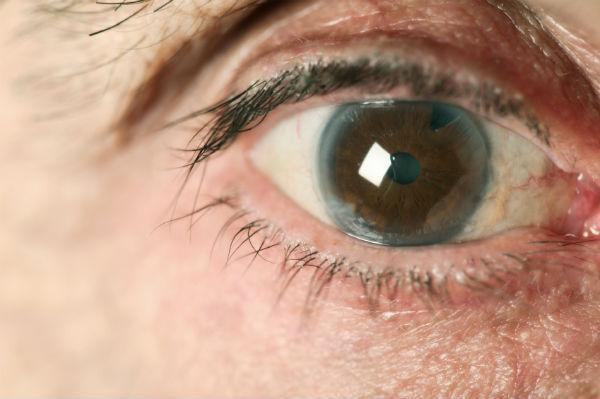

Eyesiteonwellness.com Healthy Vision Articles page 2
 3 ways to get the most from your end-of-year benefits MENU Healthy vision Caring for your eyes Nutrition Vision insurance Eye conditions Eyewear Contacts Glasses Sunglasses Vision by age Kids Adults Seniors Vision technology Vision guides Artículos en Español HR Administrator Tools SEARCH
Healthy vision
Your eyes are an important part of your overall health. Read the healthy vision articles below to discover the best ways to care for your eyes, the right foods to keep them healthy and much more.
INTERACTIVE TOOL
Eye condition simulator
Ever wonder what your loved one with macular degeneration really sees? Walk through a simulation of common eye conditions and diseases.
Read moreINTERACTIVE TOOL
Symptom Checker
This tool can help you understand what your symptoms may mean and how to make the most out of your visit to the eye doctor.
Read moreINTERACTIVE TOOL
Understanding your benefits
Check out this guide to help make your vision benefits work for you. Step-by-step, we'll walk you through the ins and outs.
Read moreINTERACTIVE TOOL
Bon EYEppetit: Good eating for great eye health
Read more
INTERACTIVE TOOL
Color-blind quiz
Take our color blind quiz and check out our comparisons of what people with color blindness see.
Read moreINTERACTIVE TOOL
Shocking winter eye facts
Winter can be rough on eyes. Germs, low temperatures, snowballs, icicles. It’s a winter wonderland of vision hazards.
Read moreINTERACTIVE TOOL
A wild look at determining your animal eyes
Are you blind as a bat? Can you see as sharply as an eagle? Find out what type of animal your vision mirrors in this interactive quiz.
Read moreINTERACTIVE TOOL
Science or Myth
Our helpful, healthful quiz gives you an eyeful of ways to improve your vision.
Read more3 ways to get the most from your end-of-year benefits
So, you’ve got vision benefits? That’s good news since they help you save money, stay healthy and see everything life has to offer. Your vision plan outlines what your benefits cover and when you can use them; Here’s a great
Read moreWhat to expect the next time you visit the eye doctor
We’ve been hunkered down for a while, and for many that’s meant delaying routine visits at the guidance of the Centers for Disease Control and Prevention (CDC). Now that some providers are re-opening or extending operating hours to again accommodate
Read moreAsk the eye doctor: What if I get hand sanitizer in my eye?
Effective hand washing is one of the best ways to stop the spread of viruses. Good old-fashioned soap and water will do the trick, as will alcohol-based hand sanitizers. They’re all the rage at the moment, with recent demand up
Read moreYou’ve got your face mask. Now what about eye protection?
It wasn’t that long ago face masks were reserved for hospitals or Halloween. Now, from grocery stores to public parks, they’re main stream and they might be here to stay — at least for a little while. Why the mask,
Read moreThe smoking gun: How cigarette smoke affects your eyes and ears
Smoking can impact how well you see and hear Here’s a hazy side effect of smoking everyone should see clearly: It could diminish your ability to see — and hear — life to the fullest. Fortunately, both also can be
Read moreBon EYEppetit: Smoked salmon salad
Fin-tastic for your eyes Zest up your salad (and your eyes) with lemony-dill dressing drizzled over smoked salmon, avocado and crunchy cucumber on a bed of spinach. The smoked salmon is full of fin-tastic vision nutrients – like zinc and
Read moreBon EYEppetit: Infused Water
hEYEdrating and refreshing If you were on a stranded island and could only take one thing what would it be? It should probably be drinking water. It’s what 60% of your body is made of and what it needs to
Read moreBon EYEppetit: Chia seed pudding
Pudding your eyes first Here’s a breakfast that your taste buds and your eyes will thank you for – tropical fruit with chia seed pudding. Chia seeds are full of good fat that help your body absorb nutrients like vitamin
Read moreBon EYEppetit: Bites for sight
Protein Balls and Hummus Are you team sweet or team savory when it comes to snacks? Fortunately, there is no rivalry between these two finger foods. Both are delicious and bring their nutrient A game for your eyes. The protein
Read moreGoing the distance on vision care: 4 ways to stretch benefits
Quick: Name three important facts about your vision benefit. We’ll wait. The less you know about your vision benefit, the more likely it is you are missing out on unexpected perks. We’re talking beyond annual eye exams and prescription lenses,
Read moreMyopia: Closing in on a looming vision condition
What turns leaves into green blobs, is longer than it is round and is shared by nearly half the people you know? The answer is closer than you might think. Myopia, commonly known as nearsightedness, is the most common cause
Read moreSi ama sus ojos, hágase un examen: 4 maneras en las que una consulta anual puede mejorar su vida
He aquí unas palabras que vale la pena leer dos veces: un examen de la vista puede crear una leyenda. Solo pregúntele a Billie Jean King. Cuando era joven, la futura jugadora de tenis profesional número 1 del mundo no
Read moreConozca los costos del oftalmólogo: 7 pautas sobre sus beneficios
Es probable que usted se considere un comprador inteligente en el supermercado o en la tienda de electrónica, pero ¿qué pasa cuando se trata de los beneficios para su vista? El aumento en los gastos de la atención médica requiere
Read morePresbyopia: Bringing a vexing condition into focus
It can be said for many of us that after about the age of 40, life can get fuzzy. Or at least, life as we see it. We mean that literally. Presbyopia, often referred to as fuzzy vison, is among
Read morePresbicia: enfoque en una afección preocupante
Para muchos de nosotros, se puede decir que la vida puede volverse borrosa después de cerca de los 40 años. O, al menos, la forma en la que vemos la vida. Lo decimos literalmente. La presbicia, con frecuencia conocida como
Read moreVision and good hygiene — the link between clean acts and clear sight
If you had to put your finger on the leading causes of eye ailments from which millions of American suffer every day, would you need to sleep on it? If so, please clean your hands and remove your contacts first.
Read moreVista y buena higiene: el vínculo entre limpieza y vista clara
Si se pusiera a pensar en las principales causas de enfermedades oculares que sufren millones de estadounidenses cada día, ¿le quitaría el sueño? Si es así, primero lave sus manos y retire sus lentes de contacto. Desde los 3 millones
Read moreHow to choose an eye doctor
It may be human nature to surround ourselves with people who see things the way we do. But we should also include a few who see things a little differently. This applies especially to your eye doctor. The person you
Read moreLove the exam, love your eyes: 4 ways an annual visit can improve your life
Here are words worth reading twice: An eye exam can make legends. Just ask Billie Jean King.As a youth, the future World No. 1 professional tennis player couldn’t figure out why her game wasn’t improving. Then when she had trouble
Read moreConsejos de viaje para la atención de la vista
Formas sencillas de evitar contratiempos comunes
Espere un momento. ¿Es esa la torre Eiffel o una torre de telefonía celular? No tiene mucho sentido hacer turismo si es como ver por la ventana sucia de un autobús turístico. Sin embargo, cada año, esto se convierte en
Read more See More ArticlesSource: The Discovery Eye Foundation, Learning-related vision problems, July 2014.
Home Healthy vision Caring for your eyes Nutrition Vision insurance Eye conditions Eyewear Contacts Glasses Sunglasses Vision by age Kids Adults Seniors Vision technology Vision guides Stay Connected © 2020 EyeMed. All Rights Reserved.
Terms and Conditions | Site Map
These materials are designed to provide general information regarding health care topics, do not constitute professional advice nor establish any standard of care, and are provided without representations or warranties of any kind. Quotations, photos and videos are not from actual patients and your experience may be different. Your treating health care professionals are solely responsible for diagnosis, treatment and medical advice. The eye care professionals in your plan are independent practitioners who exercise independent professional judgment and over whom EyeMed has no control or right of control. They are not agents or employees of EyeMed. Eye care professionals do not take the place of your physician.
These materials are designed to provide general information regarding health care topics, do not constitute professional advice nor establish any standard of care, and are provided without representations or warranties of any kind. Quotations, photos and videos are not from actual patients and your experience may be different. Your treating health care professionals are solely responsible for diagnosis, treatment and medical advice. The eye care professionals in your plan are independent practitioners who exercise independent professional judgment and over whom EyeMed has no control or right of control. They are not agents or employees of EyeMed. Eye care professionals do not take the place of your physician.
